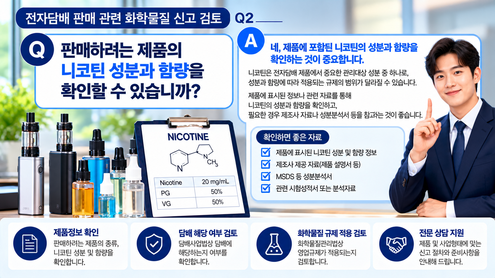
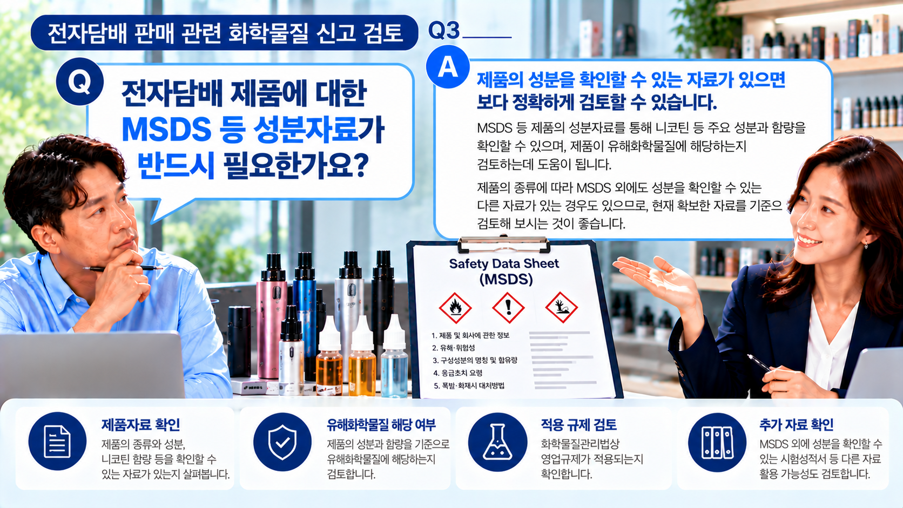

01. 먼저 제품의 종류를 확인합니다.
전자담배와 니코틴 함유 제품은 제품의 형태와 성분, 판매방식 등이 서로 다를 수 있습니다.
따라서 단순히 ‘전자담배를 판매한다’는 사실만으로 화학물질 관련 신고 여부를 판단하기보다는 실제 판매하려는 제품을 특정하는 것이 우선입니다.
제품 확인이 출발점입니다.
판매하려는 제품의 종류와 성분을 먼저 확인해야 담배 관련 규정과 화학물질 관련 규정 중 어떤 사항을 추가로 검토해야 하는지 판단할 수 있습니다.
02. 니코틴 성분과 함량을 확인합니다.
니코틴 함유 제품을 검토할 때는 니코틴이 포함되어 있다는 사실뿐 아니라 제품의 구체적인 성분과 함량을 확인하는 것이 중요합니다.
제품 표시사항이나 제조·공급자가 제공하는 자료, 성분을 확인할 수 있는 관련 자료 등을 확보하면 적용되는 규제를 검토하는 데 도움이 됩니다.

03. 담배에 해당하는지도 확인해야 합니다.
판매하려는 제품이 「담배사업법」상 담배에 해당하는지 여부는 적용되는 규제를 구분하기 위한 중요한 확인사항입니다.
전자담배 형태의 제품이라고 하더라도 제품의 종류와 구성에 따라 검토해야 할 사항이 달라질 수 있으므로, 제품의 명칭만으로 판단하기보다는 실제 제품정보와 성분자료를 기준으로 확인하는 것이 좋습니다.
‘니코틴이 있다 = 화학물질 영업신고’는 아닙니다.
담배 해당 여부와 제품의 성분, 실제 판매형태 등을 함께 확인한 후 화학물질 관련 영업규제의 적용 여부를 검토해야 합니다.
04. 어떤 사항을 확인해야 할까요?
| 구분 | 주요 확인사항 |
|---|---|
| 제품 | 판매하려는 제품의 종류 |
| 성분 | 니코틴 등 주요 성분 및 함량 |
| 제품자료 | 성분을 확인할 수 있는 관련 자료 |
| 담배 해당 여부 | 담배사업법상 담배 해당 여부 |
| 판매형태 | 실제 판매·보관·취급 방식 |
| 화학물질 규제 | 화학물질 관련 영업규제 적용 여부 |

05. MSDS가 반드시 있어야 할까요?
제품의 성분을 확인할 수 있는 자료가 있다면 니코틴 등 주요 성분과 함량을 파악하고 관련 규제 적용 여부를 검토하는 데 도움이 됩니다.
MSDS가 있는 경우 이를 활용할 수 있으며, 제품에 따라 제조·공급자가 제공하는 제품자료나 그 밖의 성분 확인자료를 함께 살펴볼 수 있습니다.
따라서 처음 상담을 받을 때 MSDS가 없다고 해서 바로 검토가 불가능한 것은 아니며, 현재 확보하고 있는 제품자료부터 확인하는 것이 좋습니다.
06. 검토는 어떤 순서로 진행될까요?
먼저 판매제품을 특정하고 성분자료를 확인한 뒤 담배 해당 여부와 화학물질 관련 규제 적용 여부를 검토합니다. 이후 실제 사업형태에 맞는 절차와 준비사항을 확인합니다.
07. 상담 전에 준비하면 좋은 자료
- 판매하려는 제품의 명칭과 제품정보
- 니코틴 등 주요 성분 및 함량 정보
- MSDS 등 확보하고 있는 성분 관련 자료
- 제조자 또는 공급자가 제공한 제품자료
- 제품의 판매·보관·취급 방식
- 사업자 및 사업장에 관한 기본정보
처음부터 모든 자료를 갖추지 못했더라도 현재 확보하고 있는 자료를 기준으로 추가 확인이 필요한 사항을 검토할 수 있습니다.
08. 실무에서 주의할 부분
- 니코틴이 포함되어 있다는 이유만으로 화학물질 관련 신고 대상이라고 단정하지 않는 것이 좋습니다.
- 제품명이나 외관만으로 판단하지 말고 실제 성분과 제품자료를 확인해야 합니다.
- 담배사업법상 담배 해당 여부를 함께 확인할 필요가 있습니다.
- 화학물질 관련 규제가 적용되는 경우에도 실제 판매·보관·취급 형태를 함께 살펴봐야 합니다.
- 적용되는 절차가 확인되기 전에 특정 신고나 허가가 반드시 필요하다고 단정하지 않는 것이 좋습니다.
전자담배 또는 니코틴 함유 제품 판매를 준비하고 계신가요?
판매하려는 제품과 성분자료를 기준으로 담배 해당 여부와 화학물질 관련 규제 적용 여부를 먼저 확인해 보세요.